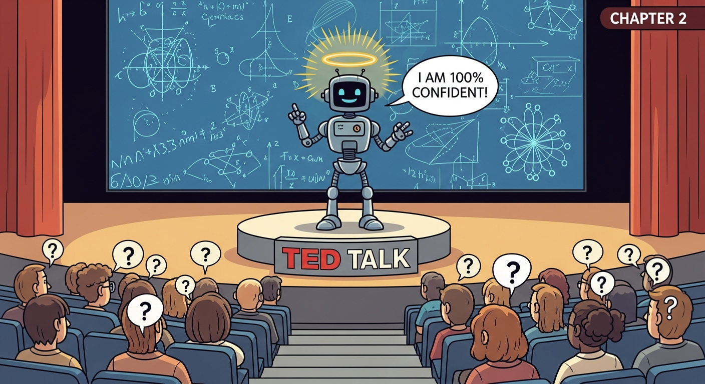

Perhaps the greatest failure point for AI leaders is treating model errors as edge cases to be squashed. In a probabilistic environment, errors are not bugs—they are part of the operating environment. If your product's value proposition collapses when the model hallucinates, you have not built a business—you have built a fragile experiment. The winning move is making errors survivable: design UIs that proactively support uncertainty through confidence scores, source citations, and transparent assumptions. The key shift: from error prevention (traditional UX) to error recovery (AI-native UX).
Every capability boundary you discover triggers all three disciplines: AI PM decides which boundaries matter for your product and prioritizes the most critical ones to probe; Vibe-Coding rapidly generates test cases and edge scenarios to map the boundary in hours, not weeks; AI Engineering builds guardrails and fallback logic that protect users when the AI ventures into unreliable territory.

Vibe-coding is ideal for probing the boundaries of what AI models can and cannot do reliably. Quickly assemble prompts that test edge cases, unusual inputs, and boundary conditions to understand where your model excels and where it fails. This hands-on exploration reveals capability limits faster than reading documentation alone, giving you intuition for model behavior before you commit to production architecture.
Objective: Build shared vocabulary on AI capabilities and limitations; understand hallucination mitigation strategies.
Chapter Overview
This chapter grounds you in what AI can and cannot do reliably. You will learn about persistent hallucinations, multimodal capabilities, reasoning limits, and how to design products that fail gracefully.
Four Questions This Chapter Answers
- What are we trying to learn? What AI can and cannot reliably do, and where hallucinations and failure modes require architectural safeguards.
- What is the fastest prototype that could teach it? A simple AI feature prototype that demonstrates the gap between AI confidence and AI reliability in your specific use case.
- What would count as success or failure? Shared team vocabulary for AI capabilities and limitations, and documented failure modes that inform product design decisions.
- What engineering consequence follows from the result? Products must be designed with graceful degradation, uncertainty communication, and human oversight mechanisms that account for AI unreliability.
Learning Objectives
- Understand the reliability spectrum for AI capabilities
- Apply appropriate AI patterns (multimodal, tool use, agents)
- Build shared vocabulary across teams for AI limitations
- Design products that handle AI failures gracefully